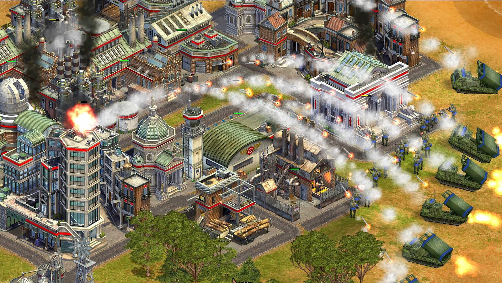

Sjedi 1! - Recenzije PC igara
Nemamo vremena za igranje igara i nismo kompetentne za ocjenjivanje... ali ćemo svejedno to uraditi!
Rise of Nations
Rise of Nations računalna je strateška igrica izdata 2003 (prije 13 godina !) i smatra se jednom od najvećih strateških igrica u realnom vremenu.
Na početku svake igre bira se jedna od 18 mogućih nacija, od kojih svaka ima neke posebnosti. Svaki igrač dobija svoju početnu teritoriju, a cilj je pobjediti na jedan od četiri načina – imati najviše teritorije, uništiti neprijatelja, graditi svjetska čuda ili imati najviše bodova.
Igra se proteže kroz period od 6000 godina, počevši od drevnog doba, klasičnog doba, srednjeg vijeka, doba baruta, prosvjetiteljskog doba, industrijskog doba, modernog doba i zadnjeg informacijskog doba. Svako doba ima svoje građevine – civilne ili vojne, građane i vojnike, te čuda.
Čuda su vrlo važan dio igre i zahtjevaju dosta radnika i resursa. To su Viseći vrtovi, Kolos s otoka Roda, Piramide, Koloseum, Zabranjeni Grad, Vojska terakota, Crvena utvrda, Poculanski Toranj, Hram u Tikalu, Versaj, Angkor Wat, Taj Mahal, Kip slobode, Eiffelov toranj, Kremlj, Svemirski program i ubrzivač čestica. Osim što svaki od njih daje određene prednosti, ovaj dio mi se svidio jer je jako poučan.
Kontrole su sjajne, mapa je relativno pregledna a pažnja je posvećenja i detaljima što se može vidjeti pri uvećavanju mape. Vrijeme potrebno da se završi zavisi od izabranog tipa i težine igre. Podržan je i mmultiplayer. Poseban plus za glazbu kroz cijelu igricu.
Godina izdavanja: 2003
Minimalni sistemski zahtjevi:
- CPU 500MHz / 800 MHz
- 128 MB RAM-a
- Win 98 / XP / 2000
- 16 MB 3D GPU
- 7GB prostora
Ocjena: